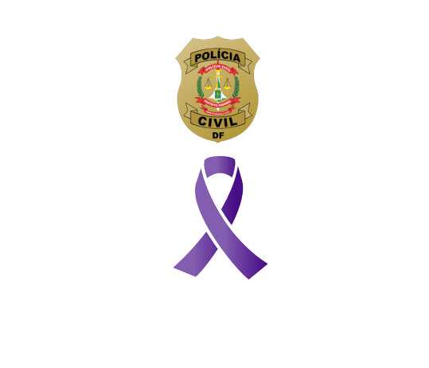
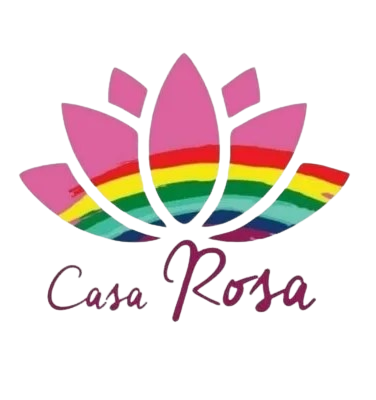
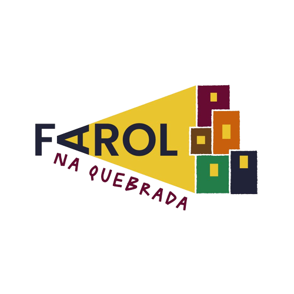
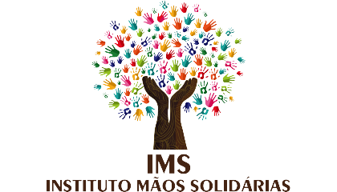
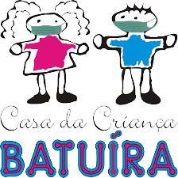
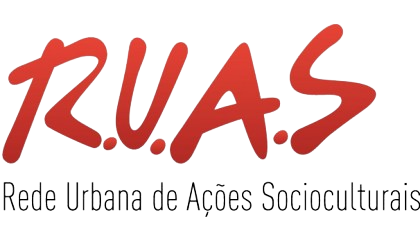

Aqui estão algumas linhas de ajuda para mulheres, a comunidade LGBTQIA+, pessoas em vulnerabilidade social e pessoas negras.
Delegacia da Mulher
Endereço: EQS 204/205 - Asa Sul - Brasília/DF - CEP: 70234-40
Telefones: 3207-6172 / 3207-6195
São delegacias especializadas em atendimento a mulheres que sofrem ou sofreram violência doméstica, crimes contra a dignidade sexual e feminicídio
O que é a violência doméstica? Segundo a Lei Maria da Penha, trata-se de qualquer tipo de ação ou omissão que cause dano físico, psicológico, moral, patrimonial ou sexual à mulher dentro do ambiente doméstico, familiar ou em uma relação íntima de afeto.
Centro de Referência Especializado de Assistência Social / Creas da Diversidade
Endereço: SGAS 614/615 Lote 104
Telefones: 3773-7489 / 3773-7490
O CREAS é uma unidade pública da política de Assistência Social que busca oferecer apoio e orientação às famílias e indivíduos em situação de risco pessoal e/ou social por violação de direitos.
O CREAS da diversidade é de atendimento exclusivo a pessoas LGBTQIA+ que estão em vulnerabilidade social (em situação de rua e violência doméstica), também ajudam pessoas transsexuais a entrarem na fila do Ambulatório Trans (O Ambulatório Trans faz atendimento pelo SUS para pessoas transsexuais que desejam começar a transição sexual).
Casa Rosa DF Casa de apoio a pessoas LGBTQIA+
Endereço: Q 17 - Sobradinho, Brasília - DF, 73045-171 Entre em contato
Centro cultural e assistencial para pessoas LGBTQIA+ que faz acolhimento a essas pessoas que foram expulsas de casa e agora estão em situação de rua, a Casa Rosa também faz atendimento psicológico a essas pessoas e promove cultura LGBTQIA+ pelo Distrito Federal.
A Casa Rosa é projeto voluntário sem fins lucrativos, recebem doações e trabalho voluntário para fazer o acolhimento a comunidade.
Instituto Farol Na Quebrada
Endereço: Qs, 1033 - Conjunto 1 Lote 4 Samambaia Sul Brasília - DF CEP:72339-091
Telefone: (61) 99284-2263
O Farol na Quebrada é uma ONG sem fins lucrativos que atua dando assistência a famílias em vulnerabilidade social com foco em crianças e adolescentes a partir de 6 anos.
Promovem ações de impacto social principalmente na comunidade de Samambaia e entorno, em relação a Saúde, Educação, Esportes e Qualificação Profissional.
Instituto Mãos Solidárias
Endereço: SH Sol Nascente - Ceilândia, Brasília - DF
Telefone: (61) 3877-8053
Instituto Mãos Solidárias é uma associação que implementa ações na área de Assistência Social, a fim de promover o bem-estar e melhoria da qualidade de vida das famílias assistidas, que vivem em estado de vulnerabilidade social, procurando garantir a proteção à família, da infância à adolescência, bem como o amparo da mesma, atendendo a todos que dela necessitam.
Jovem de Expressão
Endereço: Praça Do Cidadão EQNM 18/20 - Ceilândia Norte CEP: 72210-553
Telefone: (61) 3372-8923
O programa Jovem de Expressão está presente na cidade de Ceilândia
e tem como objetivo promover a saúde de jovens
entre 18 aos 29 anos, realizando ações de terapia
comunitária, prevenção à violência, ao crime e ao
uso de drogas, tendo como objetivo o incentivo
de práticas saudáveis e empreendedoras entre
a juventude.
Casa da Criança Batuíra
Endereço: QNM 32, Área Especial, Módulo C - Ceilândia/DF
Telefone: (61) 3201- 7811 / (61) 925621265
A casa da criança Batuíra é um abrigo para crianças e adolescentes sob medida protetiva de acolhimento.
Promovem o bem-estar e a dignidade de crianças e adolescentes em situação de vulnerabilidade social, por meio de serviços assistenciais.
Centro de Valorização da Vida - DF
Endereço: SRTVN - Brasília, DF
Telefone: 188
ONG de assistência a pessoas que necessitam de apoio emocional. Disponibilizam voluntários preparados para escutar e conversar com pessoas em estado de comoção psicológica.
R.U.A.S - Rede Urbana de Ações Socioculturais
Endereço: Setor Bancário Sul, Quadra 01 Bloco K - Edifício Seguradoras 1213/1214
Telefone: (61) 3224-0299
Uma organização de sociedade civil de interesse público que desenvolve ações socioculturais, promovendo a inclusão e justiça social a jovens de periferia com foco no empreendedorismo e na ocupação saudável de espaços públicos, as ruas.
.png) Centro de Referência Especializado de Assistência Social / Creas da Diversidade
Centro de Referência Especializado de Assistência Social / Creas da Diversidade